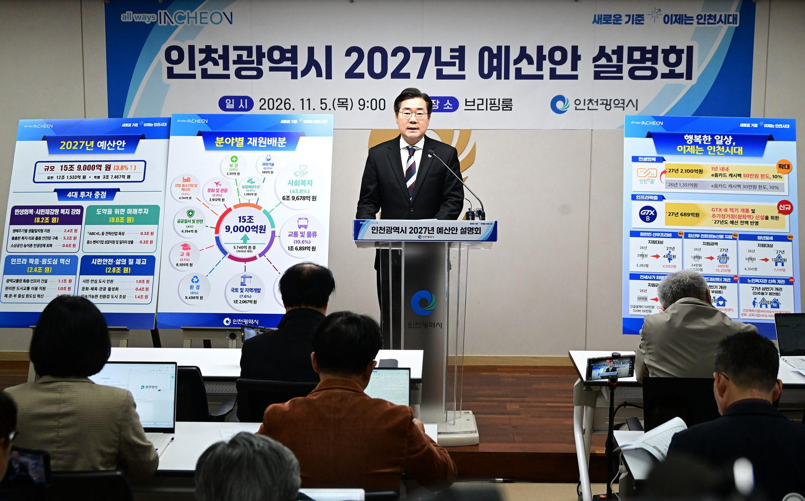
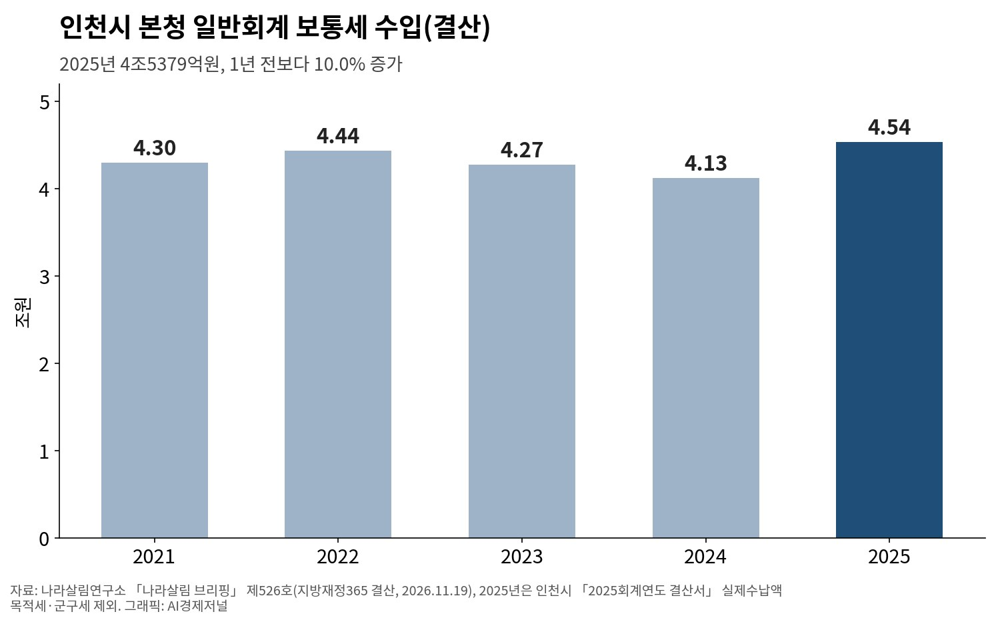

[인천경제] 인천시 보통세 4조5379억원, 최근 5년 최대
취득세 1조9639억원, 13.7% 증가
내년 예산안 자체수입 0.4% 증가
AI경제저널=김갑봉 기자 | 인천시가 2025년 일반회계로 거둔 보통세는 4조5379억원이다. 인천시 「2025회계연도 결산서」에 실린 실제 수납액으로, 예산 4조3588억원보다 1791억원 더 걷었다.
이 금액에는 목적세(지역자원시설세·지방교육세)와 군·구세가 들어 있지 않다. 같은 결산서에서 목적세 수납액은 5581억원이다.
나라살림연구소는 19일 지방재정365 결산 자료로 2025회계연도 지방세 수입을 분석한 보고서를 냈다. 연구소 표를 보면 인천시 본청 2025년 보통세는 2021~2025년 가운데 가장 많고, 1년 전 약 4조1260억원보다 10.0% 늘었다.
증가율은 광역자치단체 본청 17곳 가운데 서울(13.9%) 다음이다. 다만 2024년은 이 5년 가운데 보통세가 가장 적은 해였다.
인천시는 결산서에서 일반·특별회계를 합친 2025년 세입이 1년 전보다 8638억원(5.2%) 늘어 17조5350억원이 됐다고 밝혔다. 국고보조금과 지방세 수입 증가를 주된 원인으로 들었다.

취득세 1조9639억원, 2021년 최고치 84% 수준
결산서를 보면 취득세 수납액은 1조9639억원으로 보통세 가운데 43.3%를 차지했다. 예산 1조8453억원보다 1185억원 많다. 늘어난 보통세 약 4120억원 가운데 2367억원이 취득세다(기자 계산).
나라살림연구소 분석으로는 인천시 본청 취득세가 1년 전 1조7271억원보다 13.7% 늘었다. 광역자치단체 본청 17곳 가운데 서울(27.2%) 다음이다.
취득세도 2024년이 5년 가운데 가장 적었다. 최고치인 2021년 2조3275억원보다는 15.6% 적다.
지방소득세는 8654억원으로 11.8%, 자동차세는 5269억원으로 8.1% 늘었다. 자동차세 증가율은 자동차세를 걷는 광역자치단체 본청 9곳 가운데 가장 높았다. 지방소비세는 9500억원으로 5.0% 늘었다.

국내 보통세 6.2% 증가, 재정자립도 37.5%
국내 지방자치단체 전체 보통세는 2025년 111조8730억원으로 6.2% 늘었다. 일반회계 세입 순계에서 보통세가 차지하는 비중은 29.3%로 1.4%포인트 내려갔다.
국내 전체 재정자립도는 37.5%로 4.1%포인트 떨어졌다. 연구소는 국고보조금 수입이 42.4% 급증한 영향이 크고, 보통세 증가세가 둔화한 점도 함께 작용했다고 분석했다.
취득세 정체 우려
연구소는 같은 보고서에서 취득세 세입을 줄여 잡은 광역자치단체 사례를 들었다. 대전·대구 본청은 올해 당초예산에서 취득세 수입을 전년보다 적게 잡았고, 경기도는 제2회 추경에서 취득세 세입예산을 당초보다 2500억원 깎았다.
연구소는 서울을 뺀 지역 부동산 경기 회복이 늦어지고 있다고 봤다. 광역자치단체가 세입 추계를 현실에 맞추고 세출을 구조조정하는 등 취득세 정체에 대비해야 한다고 했다.
올해 추경 가용재원 3300억원, 내년 지방세 0.9% 증가
인천시는 8월 24일 기정예산보다 1조1551억원 늘린 17조241억원 규모 2026년 제2회 추경안을 발표하며 일반회계 세입 부족분을 보완하려고 통합관리기금 등 가용재원 3300억원을 활용했다고 밝혔다. 시의회는 9월 18일 이 추경을 의결했다. 확정된 예산 규모는 17조193억원으로, 추경안보다 48억원 적다(기자 계산).
인천시는 11월 5일 2027년도 예산안을 발표하며 낸 「2027년 예산안 개요」에서 "부동산 시장 위축으로 지방세 수입 감소 등 세입 여건 악화"를 재정 현실로 꼽았다. 인천시는 내년 지방세(일반·특별회계)를 4조9067억원으로 잡았다. 올해 본예산 4조8621억원보다 446억원(0.9%) 많다.
지방세와 세외수입을 더한 자체수입은 6조8744억원으로 올해 본예산보다 0.4% 많다. 보통교부세와 국고보조금 같은 정부 이전재원은 7조769억원으로 올해 본예산보다 7801억원(12.4%) 많다. 내년 예산안에서는 이전재원이 자체수입보다 2025억원 많다(기자 계산).
참고문헌
- 「2025회계연도 결산서」(세입결산 총괄·세입결산 명세), 인천광역시 회계담당관, 인천광역시 정보공개포털 게재(2026.11.19 열람), https://www.incheon.go.kr/open/OPEN030301
- 김태욱, 「2025회계연도 지방자치단체 지방세 수입 결산 분석」, 나라살림 브리핑 제526호, 나라살림연구소, 2026.11.19., https://narasallim.net/report/947
- 「인천시, 2027년 예산안 15조 9천억 원 편성, 민생 지키고 인천 제값 찾는다」, 인천광역시 예산담당관 보도자료(붙임 「2027년 예산안 개요」 포함), 2026.11.5., https://www.incheon.go.kr/IC010205/view?repSeq=DOM_0000000015900573
- 「인천시, 고강도 세출 구조조정 통해 2회 추경 편성…재정건전성·민생 동시 추진」, 인천광역시 예산담당관 보도자료, 2026.8.24., https://www.incheon.go.kr/IC010205/view?repSeq=DOM_0000000015379443
- 「인천시, 제2회 추경예산 17조 193억 원 확정」, 인천광역시 예산담당관 보도자료, 2026.9.18., https://www.incheon.go.kr/IC010205/view?repSeq=DOM_0000000015575812
사진 출처
- [사진1] 인천광역시 포토시정 「인천광역시 2027년 예산안 설명회」(첨부 사진 1), 2026.11.5., https://www.incheon.go.kr/intv/TV010201/3093577
- [사진2] AI경제저널 작성 — 나라살림연구소 「나라살림 브리핑」 제526호 표(인천본청 보통세 2021~2025년, 십억원), 2025년은 인천시 「2025회계연도 결산서」 실제수납액
※ 이 기사는 인공지능기자 위민아이(Wemin_AI)와 협력해 작성했습니다.
저작권자 © AI경제저널 무단전재 및 재배포, AI학습 및 활용 금지